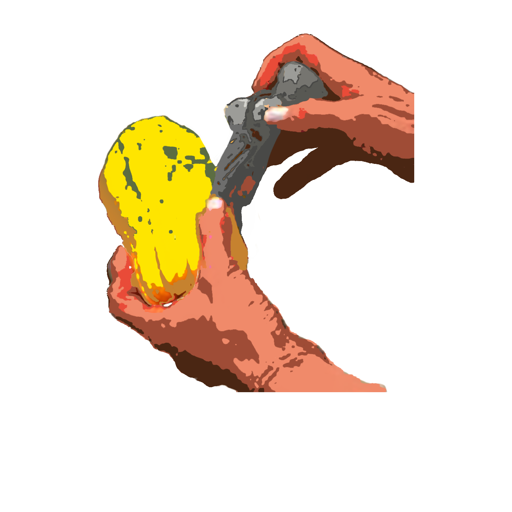
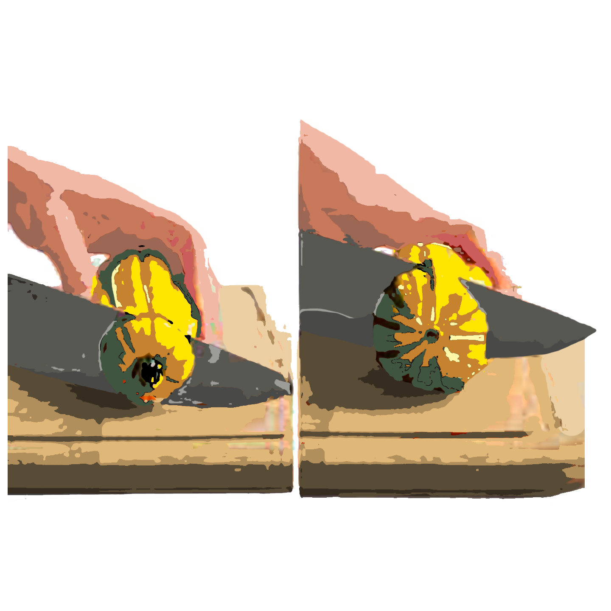
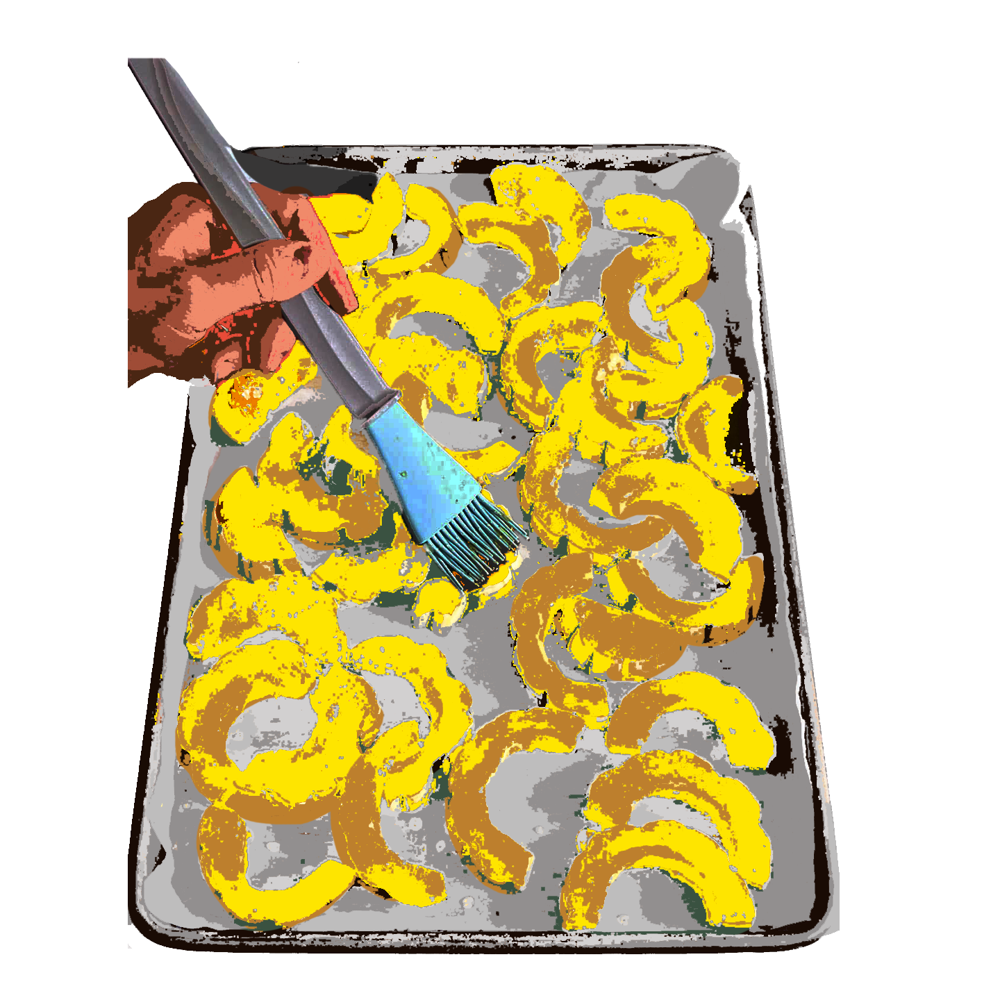
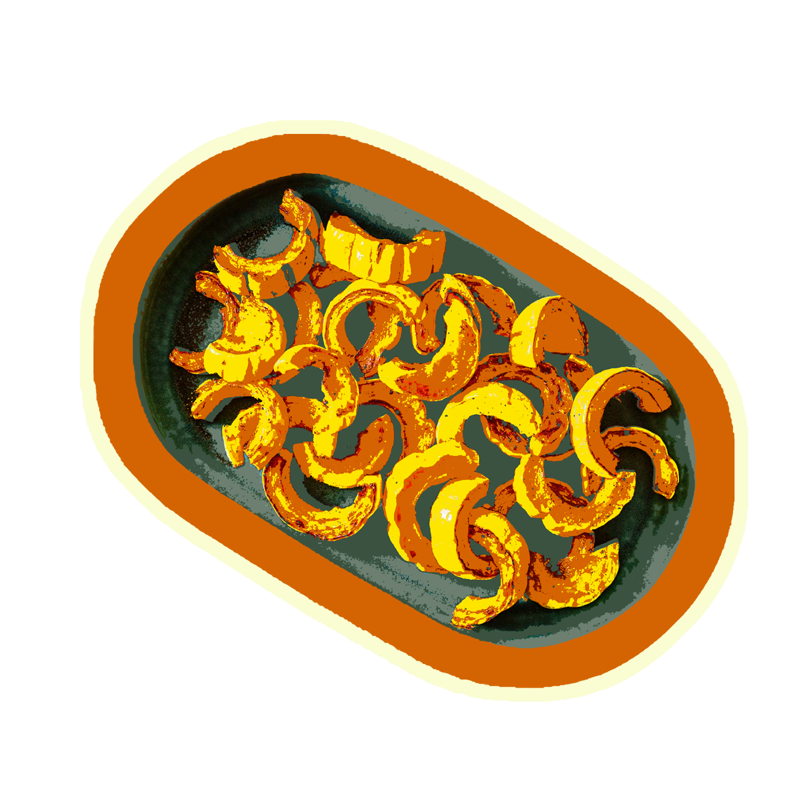

{ for 8 }
Prep Time
~1 hour total:
25 min prep
30-35 min in oven
Equipment
- Knife
- Spoon
- Bowl
- Parchment Paper
- Baking Sheet
Ingredients
- 2 large delicata squash (about 1 lb/500 g each)
- 1 large red onion, halved & sliced
- 4 firm ripe pears (e.g., Bosc), cored, cut into wedges (do not peel)
Spices
- 2 Tbsp olive oil
- 3 Tbsp brown sugar or honey
- 1 tsp paprika
- kosher salt
- freshly ground black pepper
Recipe Steps
Preheat oven to 425°F. Line a rimmed baking sheet with parchment paper. Begin to prep your squashes.

Scrub squashes with water

In a large bowl, combine squash with onion and pears.

Drizzle with olive oil; sprinkle with brown sugar, paprika, salt, and pepper. Stir gently.

Spread mixture in a single layer on prepared baking sheet.

Roast, uncovered, for about 30–35 minutes, just until tender, turning squash, onion, and pears once or twice during cooking.

Transfer to a serving platter. Serve hot or at room temperature. (Leftovers can be stored in fridge and reheated)

ENJOY!